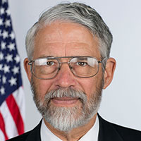
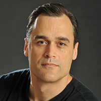

July 11-12 | Washington, DC
Keynote Speakers:
|  John Holdren Assistant to the President for Science and Technology and Director, White House Office of Science and Technology Policy |
 Jeff Flake U.S. Senator, Arizona U.S. Senate Committee on Energy and Natural Resources |
Eddie Bernice Johnson U.S. Representative, Texas Ranking Member, House Committee on Science, Space, and Technology |
|  Dan Gardner Co-author of Superforecasting: The Art and Science of Prediction and Advisor to the Prime Minister of Canada |
 Steve Kean President and CEO Kinder Morgan, Inc. |
 Gregory Goff Chairman, President, and CEO Tesoro Corporation |
Last year, more than 1,000 thought leaders from industry, government, and academia attended the 2015 EIA Energy Conference. Participants discussed current and future challenges facing domestic and international energy markets and policymakers.
To receive conference updates and additional information, follow EIA on Facebook and Twitter or email EIA at conference@eia.gov.

Speaker bios in alphabetical order
Chris Atkinson
Dr. Chris Atkinson currently serves as a Program Director at the Advanced Research Projects Agency-Energy (ARPA-E). His focus at ARPA-E includes improving the energy efficiency of advanced combustion devices, and energy conversion and storage systems.
Prior to joining ARPA-E, Atkinson founded an advanced engine technology consultancy that performed research, development, and product commercialization in the areas of engine control and calibration, fuel efficiency improvement, exhaust emissions reduction, alternative fuel utilization, and hybrid electric vehicle development. Before that, Atkinson held the rank of tenured professor in mechanical and aerospace engineering at West Virginia University. Atkinson has conducted research on behalf of a number of government agencies and automotive companies, he has authored more than 110 peer-reviewed publications and presentations, and he holds one U.S. patent. He has received awards for research and teaching from the American Society of Mechanical Engineering, the Society of Automotive Engineers, and the National Science Foundation. For several years, Atkinson was a member of the advisory board of a major international engine academic research center, in addition to advising a startup company.
He holds a BS in Chemical Engineering from the University of Natal, South Africa, an MS in Mechanical Engineering from West Virginia University, and a ScD in Mechanical Engineering from MIT, with an emphasis in thermal sciences.
Robin Bedilion
Bedilion is responsible for coordinating and conducting EPRI's Strategic Issues activities, which involve cross-sectoral, multi-disciplinary analysis including economic assessments, energy system modeling, and executive-level communications.
Bedilion joined EPRI in 2007 as a project engineer under the Technical Assessment Guide (TAG) program. Since then, her work has included engineering and economic evaluations under EPRI's CoalFleet and Renewables programs, technical evaluations of solar augmented steam cycles for fossil plants, and studies evaluating generation technology cost and performance options for international locations. Most recently, she was involved in EPRI's Innovation Scouting activities, which monitor worldwide science and technology developments to identify high-value opportunities for potential development, demonstration, and eventual deployment in the electricity sector. This work also provided support for proof-of-concept studies and early-stage development activities to explore new ideas and to advance innovative technologies as they are discovered by EPRI's experts.
Bedilion earned a Bachelor's degree in mechanical engineering from Santa Clara University and a Master's degree in mechanical engineering with a focus on energy systems from Stanford University.
Sylvie Cornot-Gandolphe
Sylvie Cornot-Gandolphe is an independent consultant on energy and raw materials, focusing on international issues. Since 2012, she has collaborated with the Energy Center of the French Institute of International Relations (IFRI) as a Research Associate; with CyclOpe, the reference publication on commodities; with CEDIGAZ, the international center of information on natural gas of IFP Energies Nouvelles (IFPEN); and since 2014, with the Oxford Institute on Energy Studies (OIES), as a Research Fellow.
Sylvie has proven experience in global energy markets. From 2006 to 2012, she was Deputy Director of Business Development at ATIC SERVICES, a leading European provider of services along the coal chain. From 2001 to 2005, she was Principal Gas Expert in the Office of Long Term Co-operation and Policy Analysis, at the International Energy Agency (IEA). Before joining the IEA, she was Manager of the Technical Cooperation Program Promotion and Development of a Market-Based Gas Industry in Economies in Transition—Gas Centre, in the Energy Division of the United Nations Economic Commission for Europe (UNECE) in Geneva, Switzerland. Sylvie was previously General Secretary of CEDIGAZ. Her latest publications include reports on coal, natural gas, and shale gas: Indian steam coal imports: the great equation (OIES, March 2016); The European Gas Market Looking for its Golden Age? (IFRI, October 2015, co-author); U.S. Coal Exports: the long road to Asia (OIES, February 2015); The U.S. shale oil revolution: the test of the business model is underway (IFRI, January 2015); China's Coal Market: Can Beijing Tame 'King Coal'? (OIES, December 2014); China's Gas Strategy (IFRI, November 2014); Gas and Coal Competition in the EU Power Sector (CEDIGAZ, June 2014); The impact of the U.S. shale gas revolution on Europe's petrochemical industries (IFRI, November 2013); Global coal trade: from tightness to oversupply (IFRI, January 2013).
Sylvie is graduated from École Nationale Supérieure du Pétrole et des Moteurs.
Nikolaas Dietsch
Niko has 13 years of professional experience with the U.S. Environmental Protection Agency (EPA). His role at EPA involves working with state energy offices, environmental departments, and utility commissions to advance energy efficiency and renewable energy as a strategy to reduce emissions and improve air quality.
Most recently, Niko led the development of EPA's requirements for evaluation, measurement, and verification (EM&V) in the final Clean Power Plan and in the proposed model rules for emissions trading. Niko is also the lead for EPA's Clean Power Plan EM&V guidance, which outlines the evaluation requirements for issuing energy efficiency credits.
Over the past several years, Niko has written EPA guidance documents for states:
- Assessing EE potential
- Implementing various state-level EE policies
- Developing approaches to evaluate results
Prior to joining EPA, Niko attended Duke University's Nicholas School of the Environment.
Sean Gallagher
Sean Gallagher is the Solar Energy Industries Association's (SEIA) Vice President of State Affairs where he oversees SEIA's legislative, regulatory, and policy development work in states nationwide. Previously, he served as an executive for firms developing utility-scale solar power projects, including supporting the first utility-scale solar plant developed on an Indian reservation in the United States.
Sean was the director of the California Public Utilities Commission's Energy Division for nearly four years, including the period when the California Solar Initiative was developed. Sean has a wide range of expertise in the solar industry and in the government sector, having worked with legislatures and agencies in California, Nevada, and Arizona, as well as with Congress and various federal agencies. In those roles, he has supported the development of specific utility-scale solar development projects and has worked on development and implementation of the Section 1603 Treasury Grant Program, the U.S. Department of Energy's loan guarantee program, state renewable portfolio standards, state tax incentive and rebate programs in California and Nevada, energy storage policy, and rate design.
Joseph Goffman
Joe Goffman has been Associate Assistant Administrator for Climate and Senior Counsel to the Assistant Administrator for Air and Radiation at the U.S. Environmental Protection Agency (EPA) since March 2013 and October 2009, respectively. During his tenure, he has worked on, among other rulemakings and actions, the Clean Power Plan, the Carbon Pollution Standards, the Mercury and Air Toxics Standards, the Cross State Air Pollution Rule, the Oil and Gas New Source Performance Standards, and related air quality and climate change rules.
Previously, Mr. Goffman served as Majority Senior Counsel to the Senate Committee on Environment and Public Works (EPW), focusing on climate change and clean air and energy issues, and as Legislative Director to Senator Joseph Lieberman (D-CT), where, as part of a broad portfolio of domestic and national security issues, he worked on the Lieberman-Warner and McCain-Lieberman climate bills. During stints on the Senate EPW Committee and at EPA earlier in his career, he played a key role in developing and drafting the landmark Clean Air Act Amendments of 1990 and the law's implementing rules, which established, among other things, the first U.S. cap and trade program for air pollution. His career also includes senior legal, policy, and management positions at the Environmental Defense Fund.
Mr. Goffman received his JD from Yale Law School and graduated from Yale College. He and his wife live in Washington, DC. The couple has three children.
Thomas Gorak
Since September 2013, Mr. Gorak has served as Chief Counsel to the Public Utilities Commission of Hawaii. As chief legal and regulatory advisor to the Commission, his responsibilities include providing recommendations concerning pending dockets, drafting policy statements and orders, providing representation in appeals and other challenges to the Commission's orders and policies, and reviewing pending legislation.
For the past 37 years, Mr. Gorak has specialized in matters pertaining to public utility regulation at both the federal and state levels. Mr. Gorak gained national recognition for his expertise in matters concerning the ongoing restructuring of the utility industry, and how various federal and state initiatives have affected, and will affect, the residential, commercial, and industrial customers served by the industry. He was co-counsel in two major federal court cases in 1985, the successful appeal of which led to the restructuring of federal regulation of the natural gas industry to permit consumers access to more competitively-priced natural gas supplies.
Mr. Gorak has lectured extensively on the issues raised by the restructuring of utility services and has published a number of articles concerning these issues. For 17 years, he served as instructor of both the basic and advanced regulatory courses for the National Association of Regulatory Utility Commissioners (NARUC). He has been a frequent speaker at a variety of programs sponsored by NARUC, the U.S. Department of Energy, the American Bar Association, and the Federal Energy Bar Association.
Bryan Hannegan
Dr. Bryan Hannegan is the Associate Director for Energy Systems Integration at the National Renewable Energy Laboratory, the U.S. Department of Energy's primary national laboratory for energy efficiency and renewable energy research and development. In this role, he leads NREL's global initiative to optimize links between electricity, fuel, thermal, water, and communication networks to enable a more sustainable society.
Prior to joining NREL, Dr. Hannegan held several research leadership positions in fossil energy, renewable energy, and environmental science and technology at the Electric Power Research Institute,the non-profit research and development arm of the electric power industry. Earlier in his career, Dr. Hannegan served as a senior energy advisor to President George W. Bush in staff positions for the Council on Environmental Quality and the National Economic Council, and he has also served as a staff scientist for the U.S. Senate Committee on Energy and Natural Resources.
Dr. Hannegan is a former elected Director of the Coastside County Water District, and he serves on many professional societies and commissions, including the California Council on Science and Technology, the American Meteorological Society's Board on Global Strategies, and the International Energy Agency's Renewable Energy Industry Advisory Board. Dr. Hannegan holds a Doctorate in earth system science and a Master of Science degree in engineering, both from the University of California, Irvine, and he also holds a Bachelor of Science degree in meteorology from the University of Oklahoma.
Sarah Ladislaw
As director of the Center for Strategic and International Studies (CSIS) Energy and National Security Program, Sarah Ladislaw leads CSIS's work in energy policy, market, and technology analysis. Ladislaw is an expert in U.S. energy policy, global oil and natural gas markets, and climate change. She has authored many publications on the geopolitics of energy, energy security and climate change, low-carbon pathways, and a variety of issues on U.S. energy policy, regulation, and market dynamics. Her regional energy work includes publications on Chinese, European, African, and Western Hemisphere energy issues. Ladislaw has spearheaded new work at CSIS on climate change, the electricity sector, and energy technology development.
Ladislaw formerly worked in Office of the Americas in the U.S. Department of Energy's (DOE) Office of Policy and International Affairs, where she covered a range of economic, political, and energy issues in North America, the Andean region, and Brazil. While at DOE, she also worked on comparative investment frameworks and trade issues, as well as biofuels development and use both in the Western Hemisphere and around the world. She also spent a short period of time working at Statoil as their Senior Director for International Affairs in the Washington, DC office. Ladislaw is frequently invited to speak at public conferences, advise companies and policymakers, and testify before Congress. She is a member of the National Renewable Energy Laboratory's Strategic Analysis Technical Review Panel, the Strategic Advisory Council for Georgia Tech's Strategic Energy Initiative, and a term member of the Council on Foreign Relations. She has taught graduate courses on energy security as an adjunct professor at The George Washington University and is a frequent guest lecturer at other universities. She also comments frequently in print, radio, and television media outlets. Ladislaw received her Bachelor's degree in international affairs/East Asian studies and Japanese from The George Washington University and her Master's degree in international affairs/international security from The George Washington University as part of the Presidential Administrative Fellows Program.
Keo Lukefahr
Ms. Keo Lukefahr is the General Manager of Natural Gas for PetroChina International (America), Inc., the America's arm of PetroChina, a Forbes Global 10 company.
Keo has worked in the energy industry for more than two decades. She served in senior trading marketing roles in leading energy companies including BP and Motiva. Earlier in her career, Keo was a Principal at the strategy-consulting firm Booz Allen Hamilton where she specialized in the Energy Sector. Keo began her career as a crude and products trader for Cargill.
Keo holds a Master of Science degree in Applied Economics from the University of Minnesota and a Bachelor of Science degree in Economics from the University of Washington. Prior to attending graduate school, Keo worked for the U.S. Peace Corps in Africa.
Ernie Megginson
Mr. Megginson is currently President of Megginson & Associates, Inc., a consulting firm focused on assisting clients in the early-phase development of projects in the energy sector.
Mr. Megginson has more than 30 years of energy and project management experience. He successfully managed the development of several large-scale international energy projects in Asia while working for two of the oil majors, Chevron and Texaco. After leaving ChevronTexaco in 2003, Mr. Megginson has acted as an independent consultant. His most recent assignments have been with several Liquefied Natural Gas (LNG) projects, including Project Manager for the Jamaica LNG import project and VP Development for the Magnolia LNG export project located in Lake Charles, Louisiana.
Francesco Memoli
Francesco received his MSME—Master of Science in Mechanical Engineering—from Politecnico di Milano University, Milan (Italy) in 1996 and his MSIE—Master of Science in Industrial Engineering—from Universidad Pontificia Comillas, Madrid (Spain) in 1997. In 1996 Francesco began his professional career in the research and development department of Nissan in Madrid, Spain, working as combustion research engineer on diesel engine projects. In 1998, he accepted a position with the Techint Group in Italy as a mechanical engineer. In his first assignment, he joined the commissioning team for the first Consteel of Europe at ORI Martin (Brescia, Italy). He was then assigned as a process engineer at the EAF of Tenaris Dalmine (Italy). He then assumed the EAF process engineer position at Tenaris Siderca (Argentina) and helped improve the operation of the two EAFs fed by a Midrex-DRI reduction plant.
In 2001, Francesco joined the commercial department of Techint Technologies, a division of Techint Group in Milan, Italy. In 2003, he became Manager of the Service department in the Melt Shops Business Unit. In October of 2008, he assumed the position of Vice President, Steelmaking for Tenova Core Inc. in Pittsburgh, Pennsylvania, where he has been responsible for the P/L of the Steelmaking Business Unit. His team designed and supplied for North America and South America complete Meltshop plants and the relevant technological equipment as Electric Arc Furnaces, Ladle Furnaces, Vacuum Degassers, Material Handling Systems, Fumes Treatment Plants, Slag Treatment Equipment, etc.
In 2015, Francesco assumed the role of Executive Vice President, American Commercial Operations, coordinating all the commercial activities for the Tenova Metals division.
Francesco has been very active with some of the most important steel associations:
- AIST—Association for Iron and SteelTechnology, where he served as Board Director (2012–14), representing the Technology Division III Steelmaking. With the AIST, he has also served as Chairman of the EAF Steelmaking Technology Committee.
- WORLDSTEEL Association, member of the EAF Expert Panel Group
- ALACERO—Latin American Steel Association, representative of Tenova before the Board
He published more than 100 articles and papers relevant to operation, safety, and environmental-related topics. He is the holder of five patents related to EAF, LMF, and slag recycling technologies. Francesco has also been a member of the Scientific Committee for the 10th European Electric Steelmaking Conference.
Pittsburgh, Pennsylvania is home to Francesco, his wife, and their three children, who all became American citizens in February 2015.
G. Mustafa Mohatarem
G. Mustafa Mohatarem, PhD, was named Chief Economist of General Motors (GM) Company on March 1, 1994. GM's Corporate Economics Team is responsible for assessing the impact of worldwide economic developments on the corporation. The team's primary responsibility is to forecast economic growth and vehicle sales in countries around the world. In addition, the Economics Team provides advice to the corporation on various competitive and economic policy issues. Mohatarem serves on the Risk Advisory Council. Mohatarem is an expert on trade issues and heads the corporation's Trade Team. He interacts regularly with officials from the United States and from other countries on trade-related issues. He was the lead contact for GM with the United States and other governments during Uruguay Round General Agreement on Tariffs and Trade (GATT) negotiations, as well as the U.S.-Canada Free Trade Agreement, North American Free Trade Agreement (NAFTA), and TransPacific Partnership (TPP).
Lars Eirik Nicolaisen
Lars Eirik Nicolaisen has been with Rystad Energy since 2008 and is currently heading up the New York Office. His core client base includes private equities and other investors who need deep insight into the oil and natural gas markets. Prior to joining Rystad Energy, Lars Eirik graduated with a Master's degree in mechanical engineering. He also participated as a founding member in an oilfield service technology startup, addressing well intervention applications.
Kelly Perl
Kelly Perl is the Industrial Team Leader in the Office of Energy Consumption and Efficiency Analysis at EIA. Kelly is responsible for the analysis of industrial sector energy consumption and the impact of technology on energy consumption in manufacturing and nonmanufacturing industries. Her team's work appears in EIA's Annual Energy Outlook, International Energy Outlook, and Today in Energy articles, as well as in conference papers. Before joining EIA in August 2011, Kelly worked at the Federal Energy Regulatory Commission and in private industry as an electricity expert. She holds a PhD in Economics from Princeton University and an AB in Economics from the University of California at Berkeley.
Allison Porter
Allison Porter joined Cushman & Wakefield in August 2014. She is based in the company's office in Washington, DC, where she focuses on business development and service delivery of the firm's local and national Sustainability Services practice. Allison also focuses on integrating sustainability and energy efficiency best practices into Cushman & Wakefield's daily operations.
Prior to joining Cushman & Wakefield, Allison was at Cadmus Group where she served for two years as an Associate and Senior Analyst in the Energy Services Division in Arlington, Virginia. In this role, Allison evaluated and advised energy efficiency and efficiency finance programs as well as managed sustainability business development efforts.
Over the past 14 years, Allison has served in various roles in the commercial real estate industry including four years as a Financial Analyst with JLL, as well as a Development Manager and Director of Sustainability with Vornado Realty Trust. While at Vornado, Allison managed world-class real estate development projects in the Washington, DC metro area and developed and implemented corporate sustainability strategies and initiatives for an 80-building Washington, DC-area portfolio.
Professional affiliations
- LEED® Accredited Professional (LEED® AP), 2006
- ULI Urban Plan Volunteer
- ACEEE Energy Efficiency Finance Forum Planning Committee
- Arlington County Commission for the Arts
- University of Pennsylvania Initiative for Global Environmental Leadership (IGEL) Advisory Board
- DCBIA Environment Committee
Professional Recognition
- Bloomberg New Energy Finance Fellow, only one in the Western Hemisphere, 2012
Education
- Bachelor of Arts, Economics and Foreign Affairs, University of Virginia
- Master of Arts, International Relations and International Economics, Johns Hopkins University School of Advanced International Studies (SAIS)
Jitendra RoyChoudhury
Jitendra Roychoudhury is a Research Fellow working on the India Energy Research program at King Abdullah Petroleum Studies and Research Center (KAPSARC), Riyadh, Saudi Arabia. He is working on developing coal models for demand and supply and researching coal logistics and transport scenarios. Before joining KAPSARC, Jitendra was Director and Chief Consultant at HDR Inc., working from Kolkata, India, where he led a number of cross functional teams that included market analytics, mine planning, resource modeling, and GIS. He consulted on projects involving coal import and production scenarios and advised clients interested in Indian coal and infrastructure sectors. Jitendra has a Bachelor's degree in Mechanical Engineering from University of Pune, India.
Elizabeth Titus
As Research and Evaluation Manager, Elizabeth Titus works on the organization's efforts to coordinate and facilitate evaluation and market research activities in the region, as well as on assessments of the effectiveness of programs, policies, and technologies that advance energy efficiency.
Recently, her work has focused on the need for common measurement and verification (M&V) protocols in the Northeast, approaches to estimating market penetration of energy efficient products, and assessment of residential HVAC efficiency opportunities in the region.
Previously, Elizabeth was Senior Analyst at National Grid in Massachusetts where she researched, analyzed, and managed evaluations of energy efficiency measures, various utility programs and policy recommendations, and contributed to the development of annual plans and performance reports to regulators in Massachusetts, New Hampshire, and Rhode Island. She has also worked for the U.S. Geological Survey on water demand research, for Science Applications International Corporation on national surveys of energy demand and supply, and as a consultant on a variety of energy and environmental issues and concerns.
Elizabeth received a Bachelor's degree in biology and environmental studies from Williams College, a Master's degree in regional science from the University of Pennsylvania, and a Master's degree in business management from Lesley University.
Michael Tubman
Michael Tubman is Director of Outreach for the Center for Climate and Energy Solutions (C2ES) and manages the center's engagement with the federal government, state governments, and key constituencies. He has more than a dozen years of experience advancing environmental policy and specializes in finding common ground between diverse stakeholders and finding solutions that work.
Mr. Tubman came to C2ES after bipartisan service in the administrations of Alaska Governors Tony Knowles, Frank Murkowski, and Sarah Palin, as an advisor on environment, energy, climate, and international policy issues. He has also worked on sustainability projects for the World Bank and on the ground at a bilateral environmental project in West Africa.
Mr. Tubman holds a Master of Arts degree in international policy from the Johns Hopkins School of Advanced International Studies (SAIS) and an undergraduate degree from Georgetown University's Walsh School of Foreign Service.
James W. Vick
Jim joined Southwestern Energy (SWN) in November 2011 as Senior Vice President of Business Information Services. He is responsible for the Business Solutions and the Information Technology that support the operations and corporate functions of the organization. Prior to joining Southwestern Energy, he spent 18 years as a Principal with Deloitte Consulting in a number of consulting and leadership positions. While with Deloitte Consulting, Jim was involved in many operational improvement projects and the implementation of a variety of financial management and reporting systems. He also provided organizational guidance to a number of corporations, non-profit organizations, and governmental entities.
Prior to his time with Deloitte, Jim advised institutional investors in the underwriting of real estate investments, worked closely with banks and savings and loans in the valuation and management of real estate portfolios, and provided tax-exempt bond administration support for municipalities.
Jim holds a Bachelor of Business Administration in Finance from The University of Texas at Austin. He has been active in charitable organizations including Junior Achievement, the Boy Scouts of America, March of Dimes, the American Cancer Society, and the Juvenile Protective Association.
Jamie Webster
Jamie Webster is an internationally recognized energy markets analyst with a particular focus on the dramatic changes now underway in oil markets. He is based in Washington, DC with a unique perspective as someone who attends OPEC meetings, interacts with oil and natural gas executives and advises U.S. policymakers. This combined with his regular analysis allows him to form frameworks on how markets, policies, and companies will likely interact in the months and years ahead. He is a frequent public speaker and is regularly quoted in the press. He has testified in front of Congress multiple times on a variety of energy-related issues and was one of the co-authors of the IHS study: U.S. Crude Oil Export Decision: Assessing the impact of the export ban and free trade on the U.S. Economy.
He is currently an independent energy analyst after departing IHS in March 2016 where he led the global oil market team, a geographically dispersed group of professionals. Previously, he served in the same capacity at PFC Energy where he also led the company's long-term scenarios work—which forecast not only the price decline, but the factors behind it. Jamie has more than 15 years of energy experience extending from oil to renewables.
Jacob Werksman
Jacob Werksman joined the European Commission in April 2012 as Principal Adviser to Directorate General for Climate Action, where his work focuses on the international dimensions of European climate policy. Werksman's responsibilities include leading aspects of the European Union negotiations under the United Nations (UN) Framework Convention on Climate Change, and advising the commission on international partnerships to reduce greenhouse gas emissions, including through the International Civil Aviation Organization.
Werksman is an international lawyer, specializing in international environmental law and international economic law. He has provided legal and policy advice to developed and developing country governments, NGOs, and international institutions in the context of the UN climate change negotiations. He has taught and published widely on the international legal dimensions of climate policy, including on the design of compliance mechanisms, climate finance, and on the relationship between carbon markets and international trade and investment agreements.
Prior to joining the Commission, Werksman held posts at the World Resources Institute, the Rockefeller Foundation, the United Nations Development Programme, and the Foundation for International Environmental Law and Development (FIELD) in London. He has lectured in international environmental and economic law at the master's level at the New York University Law School, Georgetown University Law Center, and at the School of Oriental and African Studies and University College at the University of London. Werksman holds degrees from Columbia University (AB), the University of Michigan (JD) and the University of London (LLM).
Mine Yücel
Mine Kuban Yücel is Senior Vice President and Director of Research at the Federal Reserve Bank of Dallas. She has been with the Bank since 1989. Prior to becoming research director, Yücel was head of the Bank's Micro/Regional/Energy group and Director of Publications. Yücel is an advisor to the Federal Reserve Bank of Dallas president on regional and energy issues and has published numerous articles on energy and regional growth.
Yücel serves on the executive board of the National Association for Business Economics and the Global InterdependenceCenter and the University of Texas at Dallas Energy Board. She was president of the International Association of Energy Economics (IAEE) in 2011, aninstitution with 102 member countries. She is also past president of the United States Association of Energy Economics (USAEE). She has served on the executive boards of these two organizations, as well as Executive Women of Dallas, Dallas Area Business Economists, the Dallas Chapter of Women in Technology International, Inc. and the Greater Dallas Chamber's Board of Economists. She received the USAEE Senior Fellow Award in 2007, the Energy Journal Best Paper Award in 2009, and the Outstanding Contributions to the IAEE award in 2015.
Before joining the bank, she was anassistant professor of Economics at Louisiana State University. She has a BSand MS in mathematics from Bogazici University in Istanbul, Turkey and a PhD in economics from Rice University in Houston, Texas.
Xizhou Zhou
Xizhou Zhou is a Senior Director at IHS Energy and leads the firm's natural gas and power research in Asia Pacific as well as its energy practice in Greater China. He is the author of numerous IHS Energy reports concerning natural gas, power, and coal markets, and has managed a variety of consulting engagements for both international companies investing in China as well as Chinese companies looking for growth opportunities globally. As the regional head for IHS Energy's natural gas, power and coal practice in Asia, he is also responsible for the firm's research activities in South Asian, Southeast Asian, and Northeast Asian markets.
Prior to joining IHS Energy and itspredecessor Cambridge Energy Research Associates (CERA), Mr. Zhou was a consultant engaged in regulatory and energy economics work at Industrial Economics, Inc. in Boston, Massachusetts. Earlier in his career he was a research analyst at the World Resources Institute in Washington, DC, where he focused on energy and transportation in developing Asia and Latin America.Fluent in Mandarin Chinese and proficient in Spanish, Mr. Zhou holds a Bachelor of Arts degree and a Master of Environmental Management degree, both from Yale University.
Mr. Zhou is currently an editorial board member of China Petroleum Society's official journal International Petroleum Economics and also serves on the Board of Trustees of the Yale-China Association.
The conference will take place at the Washington Hilton hotel, located at 1919 Connecticut Avenue, NW. The hotel provides easy access to restaurants, boutique shopping, the National Zoo, Smithsonian museums, and the White House. The hotel is located six miles from Ronald Reagan National Airport.
Washington Hilton
1919 Connecticut Avenue, NW.
Washington, DC 20009
(202) 483-3000
The Dupont Circle Metro Station on the Red Line is the closest Metro station to the hotel. Exit at the north end of the station to Q Street and walk four blocks north on Connecticut Avenue to the hotel.
View the hotel's map for more information about the area and driving directions.
Parking is available at the hotel for $41/day. Other parking garages are located within walking distance.
There is not a conference room block at the host hotel. Attendees may make reservations at the Hilton on their own or elect to stay at another hotel.
Wi-Fi will be available at the conference.
Registration rates and deadlines
Standard registration* |
$420 |
Student registration Must show a student ID |
$100 |
Media registration Media require a payment code – contact Jonathan.Cogan@eia.gov for code |
|
* Registration will be held on-site. |
|
The 2016 EIA Energy Conference is a great place to learn about careers at EIA and about careers in the energy industry. This year's conference features a career information session and a job fair where you can meet EIA representatives and learn about EIA career opportunities. You do not need to register for the conference to attend the job fair or career information session.
Professional development: Careers in EIA
Monday, July 11th 3:15 p.m. – 4:45 p.m.
Location: Jefferson East
This panel will explore career opportunities in EIA, including a discussion of the diverse skills and talents EIA needs to attract in order to meet its important and challenging mission. As the nation's premier source of energy information, EIA is always looking for bright, motivated individuals that can help us develop new and innovative ways to help our customers understand the fast-paced, rapidly changing energy marketplace. And because energy continues to be one of the fastest-growing employment sectors in the world, our panelists will also include a diverse group of industry professionals from academia, finance, government, and the global energy private sector who will share insights about their careers, thoughts about the future of the industry, and information about how you can best prepare for a career in energy.
Moderator: Jeffery Anoka, DOE
Panelists:
- Hannah Breul, EIA
- Jherika Curry, EIA
- Marcelia Freeman, EIG Global Energy Partners
- Slade Johnson, EIA
- James Koehler, Georgetown University
- Eric Smith, Tulane University Energy Institute
EIA is hiring
EIA attracts applicants with degrees in Economics, Statistics, Mathematics, Operations Research, Engineering, Business/Finance, Social Science, and Web Design. EIA offers starting pay grades ranging from GS-7 to GS-13 ($43,000 to $119,000), and executives can earn more than $180,000.
EIA will conduct on-the-spot interviews during the conference. Individuals who applied to the positions that closed on June 13 will be considered for immediate hiring. Applicants will be contacted directly by EIA hiring managers to schedule on-the-spot interviews.
There will be another round of job postings during the conference. Applicants can apply to those jobs as they appear on USAJOBS.gov. Applicants who applied to the previous openings do not need to reapply.
EIA representatives will be present at the conference, and they will be available to share information about EIA job opportunities, collect resumes of prospective candidates, and have conversations about working at EIA.
Current Job Openings
|
While there are no job openings listed at this time, please sign up to receive email updates as new jobs are posted. |
Check out these materials for more information about the various roles at EIA: